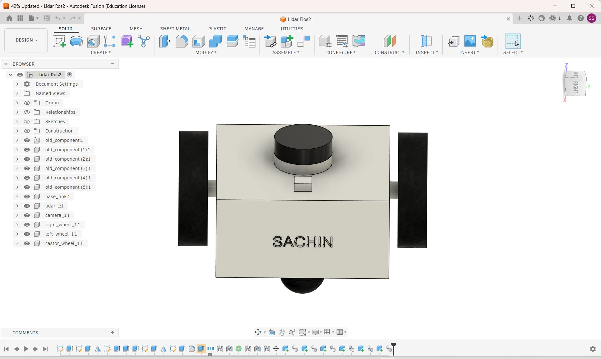
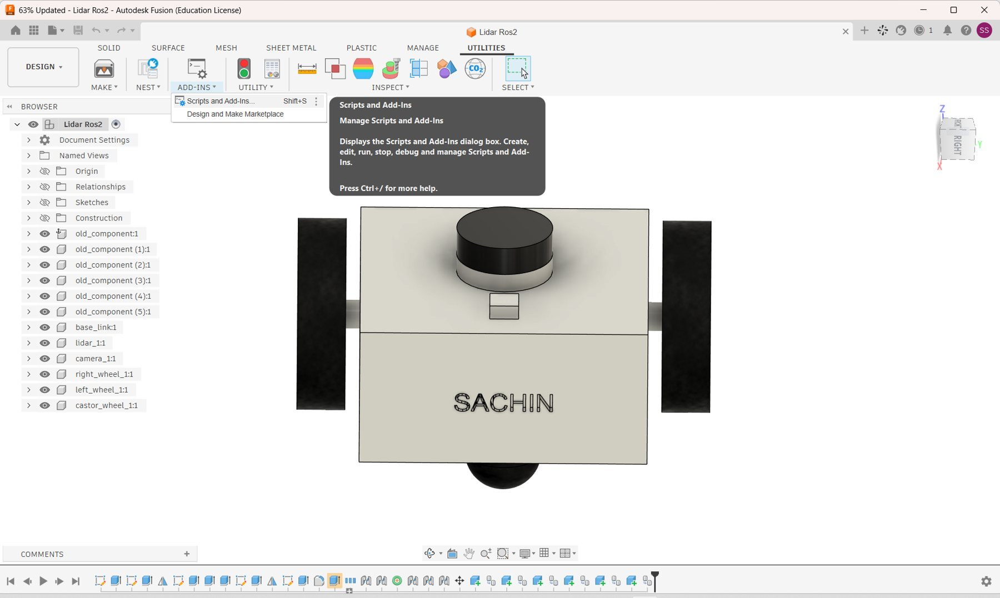
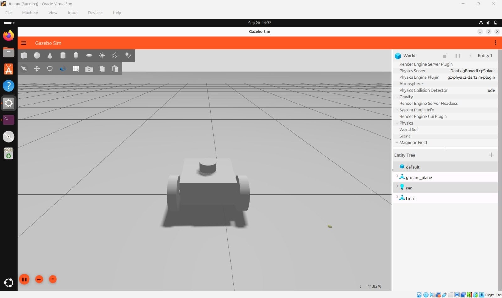
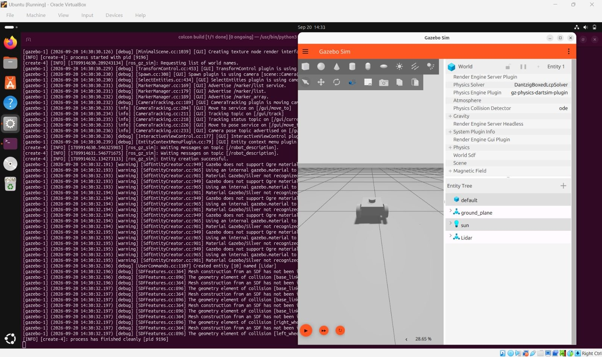
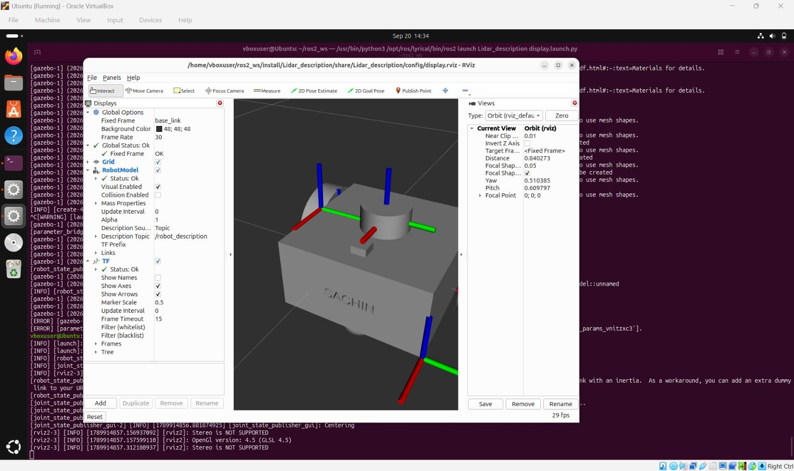
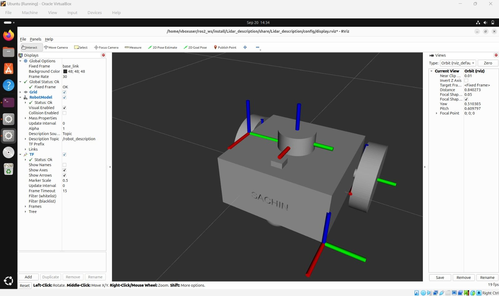

01Overview
This task takes a robot from design to simulation. The robot is first designed in Autodesk Fusion (design Lidar Ros2) as separate components: a body, a lidar, a camera, two wheels and a castor wheel, with the name SACHIN on the front. It is then exported as a robot description with a URDF export script, brought into Gazebo Sim through the package Lidar_description in ~/ros2_ws, and checked in RViz.
02Concepts
Component
A separate part of the design in Fusion. Each robot part is its own component.
URDF
The XML format ROS 2 uses to describe a robot: its links and joints. A Fusion script can export the design to it.
Robot description
The published description of the robot, sent on the /robot_description topic.
Gazebo Sim
A physics simulator. It loads a world (ground plane and sun) and the robot is added as an entity.
ros_gz_sim create
The ROS 2 program that waits for /robot_description and then creates the robot in Gazebo.
RViz and TF
RViz draws the robot model. The Fixed Frame is base_link, the body of the robot.
03Task Flow
04Fusion: Model View
The robot seen from the top in Fusion, with the browser on the left and the timeline at the bottom. The lidar is the black cylinder with a light band, and the small block in front of it is the camera. The two black blocks at the sides are the wheels, and the castor wheel shows under the body. The name SACHIN is on the front face.

05Fusion: Component List
Components in the browser, in order:
| Component | Role |
|---|---|
| old_component:1 and old_component (1) to (5):1 | Six components from an earlier version of the design |
| base_link:1 | Main body of the robot |
| lidar_1:1 | Lidar sensor on top |
| camera_1:1 | Camera block on top |
| right_wheel_1:1 | Right drive wheel |
| left_wheel_1:1 | Left drive wheel |
| castor_wheel_1:1 | Castor wheel under the body |
06Fusion: Explore the Tree
Browser tree
Press a name from the Fusion browser to see what it is.
07Fusion: Scripts and Add-Ins
The Utilities tab has an Add-Ins menu with two entries: Scripts and Add-Ins (shortcut Shift+S), which opens a dialog to create, edit, run, stop, debug and manage scripts and add-ins, and the Design and Make Marketplace. Add-ins are how extra tools are added to Fusion.

The dialog lists scripts with their Run button, Run on Startup and Version. Most are standard Fusion sample scripts, such as AutoTimeline, Bolt, ExtractBOM, ImportSplineCSV and SpurGear. One entry, Fusion_URDF_Expor... (the name is cut off in the window), is highlighted. It appears to be a URDF export script, which is the tool that turns a Fusion robot design into a URDF robot description for ROS 2. It has no version number shown.
08From CAD to Simulation
The robot in the Gazebo and RViz screenshots has the same parts as this design: a box body with SACHIN on it, two wheels, a lidar cylinder and a ball under the body, and the log names the base link and the left and right wheels. The Fusion_URDF_Expor... script in the Scripts and Add-Ins list suggests the design was exported to a URDF robot description from here, and that description is what Gazebo and RViz load. The export itself is not shown in the screenshots, so its settings and output files are not described.
09Gazebo Sim
Gazebo Sim shows a flat grey ground plane with the robot standing on it. The entity tree lists default (the world), ground_plane, sun and Lidar, which is the robot. The World panel shows the physics settings: the physics engine is gz-physics-dartsim-plugin, the solver is DantzigBoxedLcpSolver and the collision detector is ode.

10Spawning the Robot
The terminal log shows how the robot gets into Gazebo. The create program asks for the list of world names, waits for a message on /robot_description, and then reports that entity creation was successful. Gazebo then says it created an entity named Lidar, and the create process finishes cleanly.
| Log line (shortened) | Meaning |
|---|---|
| Requesting list of world names | create asks Gazebo which world is running |
| Waiting messages on topic [/robot_description] | it waits for the robot description to be published |
| Entity creation successful | the robot was added to the world |
| Created entity [10] named [Lidar] | Gazebo confirms the new entity |
| process has finished cleanly | create did its job and exited |

11RViz
RViz is started with the launch file in the workspace. The terminal title shows the command, and the RViz title shows the config file it loaded.
cd ~/ros2_ws
ros2 launch Lidar_description display.launch.py| Setting | Value |
|---|---|
| Config file | Lidar_description/config/display.rviz (in the install folder) |
| Fixed Frame | base_link |
| RobotModel description topic | /robot_description |
| TF | Show Axes ticked, marker scale 0.5 |
| View | Orbit (rviz_default), focal point 0, 0, 0 |

12Model Views in RViz
Switch between the two views of the same model. The coloured arrows are the TF axes of each link (red x, green y, blue z).

13Robot Parts
Press a part to see what it is.
Robot parts
14Reading the Warnings
The launch log is long and has warnings. Open each kind to see what it says.
Gazebo material warnings
The log says that Gazebo does not support the Ogre material and that the material Gazebo/Silver is not recognised, so an internal gazebo.material is used. The robot still appears, only its colour comes from the default material.
Mesh and collision messages
Debug lines say that mesh construction from an SDF has not been done and mention the geometry element of collision for the base link and the wheels. They are debug messages from the physics setup, not stopping errors.
Inertia warning from robot_state_publisher
One line warns about a link with an inertia and suggests adding an extra dummy link as a workaround. The robot model still loads in RViz.
RViz start-up lines
rviz2 reports that stereo is not supported and that OpenGL version 4.5 is used. This is normal inside a virtual machine.
A few ERROR lines also appear earlier in the launch log, but the screenshot shows them only in part, so they are not described here. RViz opened and the model displayed correctly afterwards.
15Steps
Tick each step as you go. Your ticks are saved in this browser.
16Observations
- One design feeds the whole chain: the same parts and names appear in Fusion, Gazebo and RViz.
- Warnings do not mean failure: Gazebo and RViz both showed the robot correctly in spite of the material and mesh messages.
- base_link is the reference for all the frames, which is why it is the Fixed Frame.
- The robot was placed and checked in the simulator: the screenshots show it standing on the ground plane in Gazebo Sim. They do not show it being driven, so no movement results are given.
17Reflection
This task shows the full path of a robot: designed once in CAD, exported as a description, spawned in a simulator and checked in a viewer. Reading the log lines one by one, such as waiting for /robot_description and entity creation successful, makes it clear what each program is doing at each step.
18Files
Fusion design: Lidar Ros2 (Open the Lidar Ros2 design in Fusion ↗). Workspace ~/ros2_ws, package Lidar_description, launch file display.launch.py, RViz config config/display.rviz. The exported URDF file name is not shown in the screenshots, so add it here if you want it listed.